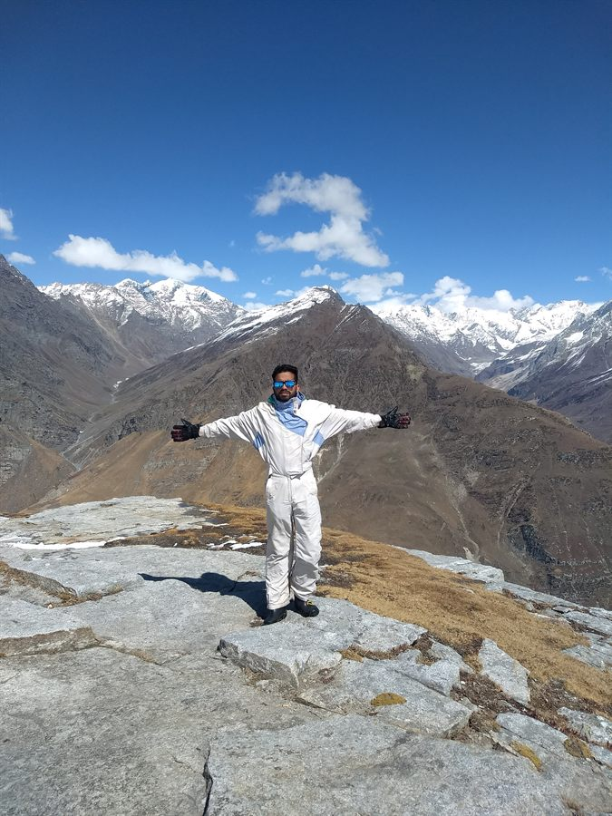

PhD Scholar · IIT Mandi
Ashutosh Kumar
Researching durable, climate-resilient concrete pavements and their life cycle environmental impact.
PhD student in Transportation Engineering and Pavement Materials at the School of Civil and Environmental Engineering, supervised by Dr. Kaustav Sarkar.
- Life Cycle Assessment
- Hygrothermal Analysis
- Concrete Durability
- Pavement Engineering

Research
Research Trajectory
"My research centers on making transportation infrastructure durable, climate-resilient, and environmentally sustainable. I study how temperature and moisture variations affect concrete pavement response, thermal stresses, fatigue, durability, and service life, and I connect these mechanistic findings with Life Cycle Assessment to understand the real environmental performance of rigid pavements in India's mountainous regions."
Current Doctoral Research IIT Mandi
- Life Cycle Assessment (LCA) of Pavements Developing holistic frameworks to model the environmental impacts of modern pavement systems. A key aim is to integrate concrete durability and hygrothermal performance into LCA, moving beyond conventional approaches that assume a fixed service life.
- Hygrothermal Analysis of Concrete Pavements Utilizing numerical modeling and computational analysis to study heat and moisture gradients in concrete pavements. Understanding these coupled variations is essential for mitigating curling, warping, and early-age cracking in rigid pavements subjected to fluctuating environmental conditions. The work examines their effect on thermal stresses, fatigue behavior, durability, and service life under the climate of Indian mountainous regions.
Research Gallery
Visualizing key concepts in transportation infrastructure, pavement sustainability, and advanced material engineering.
Pavement Life Cycle Assessment
Linking concrete durability and hygrothermal performance to service life and environmental impact.
Hygrothermal Behavior of Concrete Pavements
Temperature and moisture gradients, curling, and their effect on service life in mountainous climates.
Pavement Surface & Vehicle Speeds
How roughness and distress affect the operating speeds of different vehicle classes (M.Tech research).
GIS Accident Black Spot Analysis
Mapping and ranking accident black spots in Thiruvananthapuram using ArcGIS and QGIS.
Publications
CTSEM 2024 Conference Paper
Published in: CTSEM 2024 (Springer). M.Tech research paper on sustainable pavement engineering and materials.
Education
PhD in Transportation Engineering
IIT Mandi
Focusing on pavement materials and advanced transportation infrastructure solutions.
M.Tech in Traffic & Transportation Planning
National Institute of Technology Calicut (NITC)CGPA: 8.41/10
B.Tech in Civil Engineering
College of Technology and Engineering, UdaipurCGPA: 6.77/10
Senior Secondary (XII)
Science Degree College Supaul
68.8%
Projects
CSIR-Central Road Research Institute (CRRI)
New Delhi
1 June – 28 July 2023
Supervisor: Dr. G. Bharath, Senior Scientist (FPD)
"Impact of geosynthetics on reflective cracking performance life of asphalt concrete overlays"
Also worked on: Development of Bio-Binders for Sustainable Bituminous Roads
Influence of Pavement Surface Characteristics on the Speeds of Different Classes of Vehicles (Pavement Distress And Roughness)
Identification of accidents black spot in Thiruvananthapuram using GIS Software (Arc GIS & QGIS)
Design and analysis of multi story car parking of steel as material using ETabs
Study about self healing concrete
Activities & Honors
Honors & Recognitions
-
MoE Doctoral Fellowship
Awarded for pursuing Ph.D. research at IIT Mandi.
-
GATE Qualified
Qualified Graduate Aptitude Test in Engineering with a high percentile.
-
Academic Excellence Award
Recognized for outstanding academic performance during M.Tech at NIT Calicut.
Teaching & Mentorship
-
Teaching Assistant - Pavement Engineering
IIT Mandi (Aug 2024 – Present) | Assisting in undergraduate and postgraduate courses, conducting lab sessions, and grading assignments.
-
Teaching Assistant - Transportation Engineering
NIT Calicut (Jan 2023 – Jul 2024) | Supported transportation engineering courses and the transportation engineering laboratory.
-
B.Tech Project Co-Mentorship
Guiding undergraduate students in their final year research projects related to sustainable pavement materials.
Outreach & Professional Service
-
Full-Depth Reclamation (FDR) Field Visit
With the Sustainable Pavement Research Group, IIT Mandi: joined PWD engineers at a road construction site for a proposal discussion on rehabilitating an existing road using FDR, and visited an FDR trial section.
Extra-Curricular
-
ACES 2.0 – Annual Civil Engineering Symposium 2026 School of Civil & Environmental Engineering (SCEnE), IIT Mandi · 8–10 October 2026 Role: Organising Committee Member
- Student coordinator for International Conference RAID-2024 at NIT Calicut
- 2-Year NSS Volunteer
Expertise
Technical proficiencies and certifications acquired through rigorous academic research and practical application.
Software Skills
Languages
Core Certifications
-
Short Course on Principles and Practices of Bituminous Pavement Design
IIT Kanpur (Centre for Continuing Education and Dept. of Civil Engineering)
February 17–19, 2025Completed a comprehensive three-day program focusing on advanced design methodologies and practical applications for bituminous pavements, led by academic and industry experts.
-
Tools for Transportation Data Analysis & Modelling
CTR, NIT Calicut
6-Day STTP
Key Technical Competencies in Research
Pavement Engineering
Bituminous (flexible) and concrete pavement design, overlay design, distress evaluation, pavement evaluation and rehabilitation, laboratory testing, and surveying.
Sustainability Tools
Lifecycle assessment methodologies, inventory data analysis, statistical data analysis.
Simulation & Modeling
Computational analysis of thermal and moisture gradients, and structural analysis.
Spatial & Traffic
Geospatial crash analysis and traffic simulation.
Gallery
Moments from conferences, field visits, and academic events.
Let's Connect
Open to academic discussions, research collaborations, and professional opportunities in transportation engineering.
-
Official · IIT Mandi d24098@students.iitmandi.ac.in
-
ashustar66@gmail.com
-
+91 8539807776
-
IIT Mandi, Kamand, Himachal Pradesh, 175005